앞 챕터의 일원분산분석(One-Way Anova)는 설명변수가 1개, 종속변수가 1개 일 때 모집단에 대한 평균을 비교하는 방법이었다.
일원분산분석에서 종속변수는 연속형 자료 이어야하고, 설명변수는 대체로 3개 이상의 집단을 갖는 범주형 변수이어야 했다.
이원분산분석(Two-way Anova)는 One-way Anova와 달리, 설명변수가 2개, 종속변수가 1개 일 때 모집단에 대한 평균을 비교하는 방법이다.
일반적으로, 설명변수 2개를 주효과라고 일컫는다.
이때, One-Way Anova와 동일하게 설명변수는 범주형 자료이어야 한다.
또한, 이원분산분석은 일원분산분석과는 주효과간 차이와 더불어, 교호작용이라는 추가적인 효과를 고려한다.
교호작용은 두 주효과가 서로 상호간에 영향을 주고 받으면서 나타나는 반응효과를 말한다.
기본 가정사항은 독립성, 정규성, 등분산성으로 일원분산분석과 같은 기본 가정사항을 가진다.
주효과 A를 지하철 이용 방법, 주효과 B를 지하철역, 반응변수를 승객의 수라고 하자.
이원분산분석의 귀무가설은 다음과 같다.
주효과 A에 대한 귀무가설 H0: 지하철 이용 방법에 따른 승객의 수의 차이가 없을 것이다.
H1: 지하철 이용 방법에 따른 승객의 수의 차이가 있을 것이다.
주효과 B에 대한 귀무가설 H0: 지하철 역에 따른 승객의 수의 차이가 없을 것이다.
H1: 지하철 역에 따른 승객의 수의 차이가 있을 것이다.
교호작용에 대한 귀무가설 H0: 지하철이용 방법과 지하철 역의 교호작용 효과가 없을 것이다.
H1: 지하철이용 방법과 지하철 역의 교호작용 효과가 있을 것이다.
library(HH)## Warning: package 'HH' was built under R version 4.0.4## Loading required package: lattice## Loading required package: grid## Loading required package: latticeExtra## Warning: package 'latticeExtra' was built under R version 4.0.4## Loading required package: multcomp## Warning: package 'multcomp' was built under R version 4.0.4## Loading required package: mvtnorm## Loading required package: survival## Loading required package: TH.data## Warning: package 'TH.data' was built under R version 4.0.4## Loading required package: MASS##
## Attaching package: 'TH.data'## The following object is masked from 'package:MASS':
##
## geyser## Loading required package: gridExtra## Warning: package 'gridExtra' was built under R version 4.0.4data(display)display 데이터는 아래와 같이 구성 돼있다.
anova Formula에서 변수*변수의 형태로 지정을 해주게 되면, 그 두 변수의 주효과와 더불어 교호작용의 유의성까지 확인할 수 있다.
displayf.aov <- aov(time~emergenc*panel,data=display)anova(displayf.aov)## Analysis of Variance Table
##
## Response: time
## Df Sum Sq Mean Sq F value Pr(>F)
## emergenc 3 1052.46 350.82 60.5731 1.612e-07 ***
## panel 2 232.75 116.38 20.0935 0.0001478 ***
## emergenc:panel 6 28.92 4.82 0.8321 0.5675015
## Residuals 12 69.50 5.79
## ---
## Signif. codes: 0 '***' 0.001 '**' 0.01 '*' 0.05 '.' 0.1 ' ' 1분산분석 결과, 2개의 주효과는 유의확률이 유의수준 0.05보다 작으므로 유의하다.
따라서, 2개의 주효과 모두 적어도 한 집단 간 유의한 차이가 발생하는 것을 알 수 있다.
교호작용의 경우, emergenc:panel의 형태로 표시되며, 유의확률이 유의수준 0.05보다 크므로 유의하지 않다.
따라서 두 개의 주효과의 교호작용 효과는 유의하지 않음을 알 수 있다.
interaction2wt(time ~ panel.ordered * emergenc, data=display)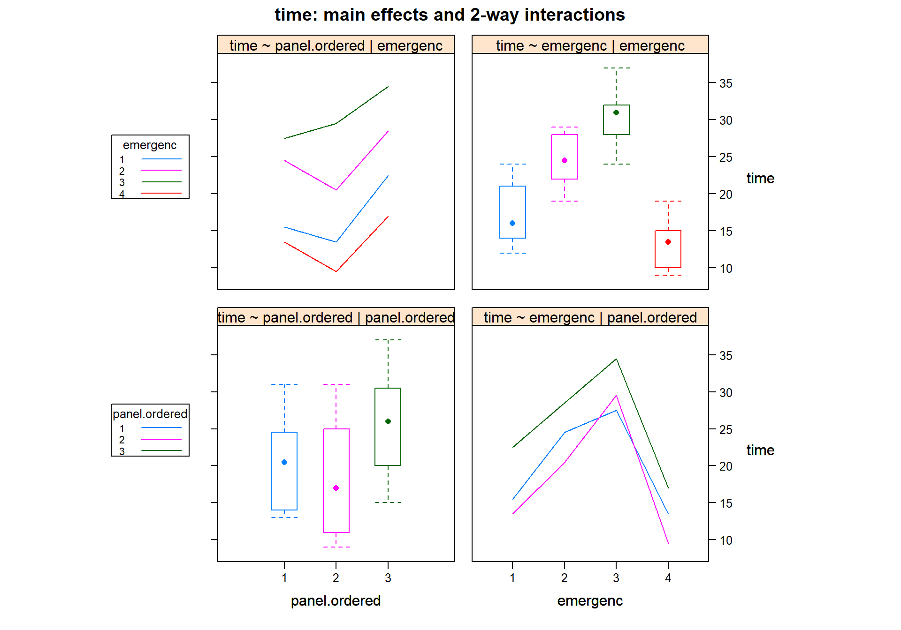
interaction2wt을 통해 교호작용 그림을 그리게되면 위와같은 결과를 얻을 수 있다.
먼저, 각 독립변수의 범주별 반응변수에 대한 boxplot을 확인할 수 있다. 이를 통해, 주효과의 집단에 따라 주효과의 변화를 살펴 볼 수 있다.
또한, 왼쪽위와 오른쪽 아래 패널은 교호작용 그래프를 나타낸다.
왼쪽 위의 그래프는 거의 평행하고 오른쪽 아래의 교호작용의 plot은 교차점이 있지만 선마다 거의 평행을 이룸을 볼 수 있다.
이를 통해, 우리는 교호작용의 효과가 유의하지 않음을 확인할 수 있다.
또 다른 교호작용 효과 확인 방법으로는 interaction.plot함수는 교호작용에 대한 plot만을 그릴 수 있다.
interaction.plot(x.factor,trace.factor,reponse)를 이용하여 그린다.
interaction.plot(x.factor = display$panel.ordered,trace.factor=display$emergenc,response=display$time,
ylab="emergenc",xlab="panel.ordered")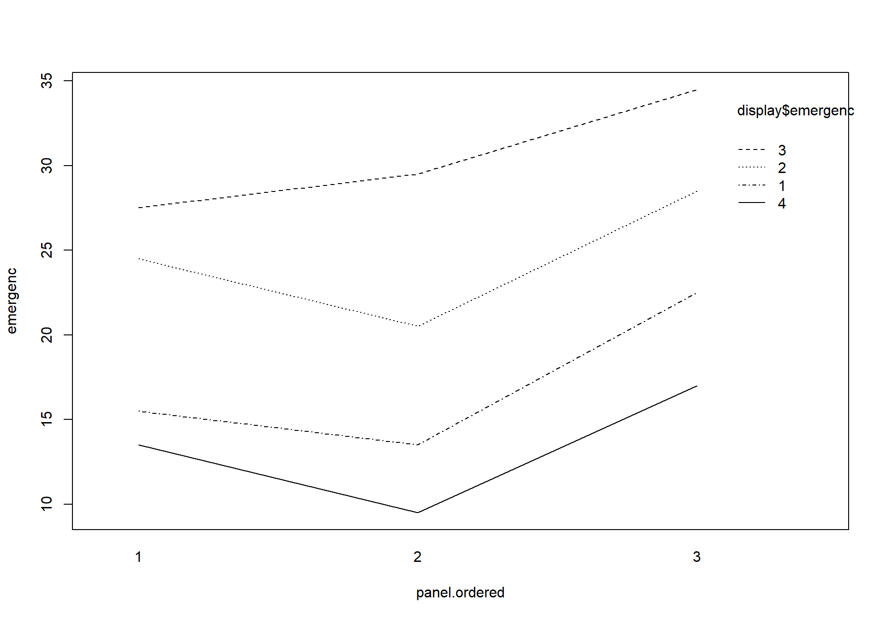
interaction.plot의 결과, 앞에서 우리가 그려봤던 상호작용 plot 그림과 동일한 그림을 얻을 수 있다.
mmc함수에서 foucs옵션은 독립변수 중 어느 변수를 기준으로 다중비교 분석을 진행할지 결정하는 옵션이다.
displayf.mmc <- mmc(displayf.aov,focus="panel")
displayf.mmc## Tukey contrasts
## Fit: aov(formula = time ~ emergenc * panel, data = display)
## Estimated Quantile = 2.668563
## 95% family-wise confidence level
## $mca
## estimate stderr lower upper height
## 3-1 5.375 1.203294 2.163934 8.586066 22.9375
## 3-2 7.375 1.203294 4.163934 10.586066 21.9375
## 1-2 2.000 1.203294 -1.211066 5.211066 19.2500
## $none
## estimate stderr lower upper height
## 3 25.625 0.8508574 23.35443 27.89557 25.625
## 1 20.250 0.8508574 17.97943 22.52057 20.250
## 2 18.250 0.8508574 15.97943 20.52057 18.250panel 집단에 대한 다중비교 분석결과, 3-1,3-2 집단은 신뢰구간이 0을 포함하지 않으므로 집단 간 차이가 있음을 알수 있다.
mmcplot(displayf.mmc,style="both")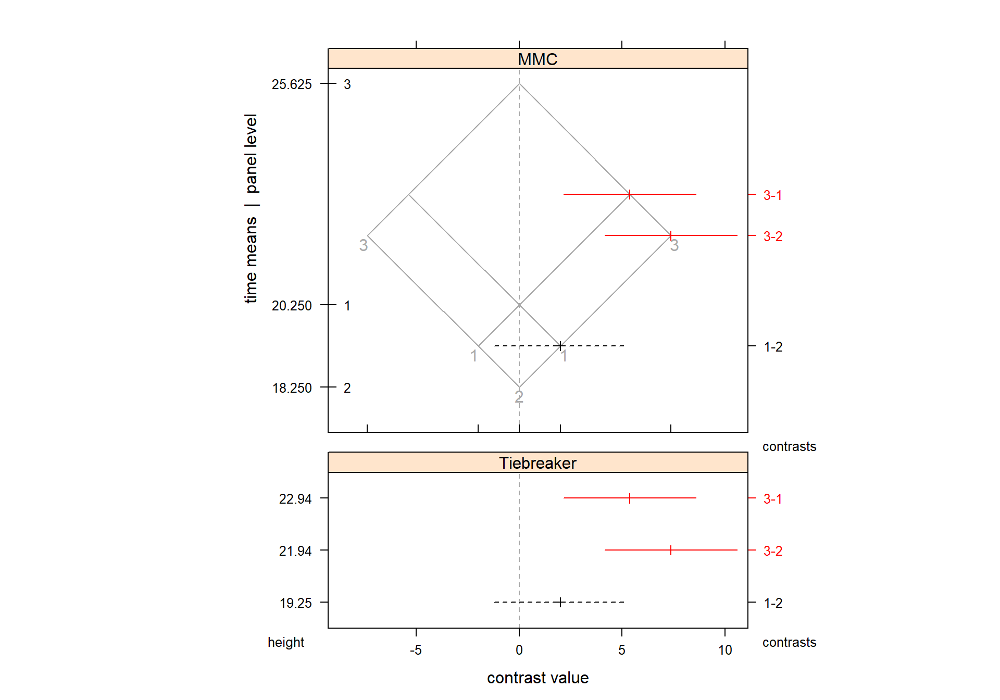
mmcplot을 통해 유의한 차이가 있는 집단이 붉은색으로 지정된 것을 시각적으로 확인할 수 있다.
mmcplot(displayf.mmc,type="none")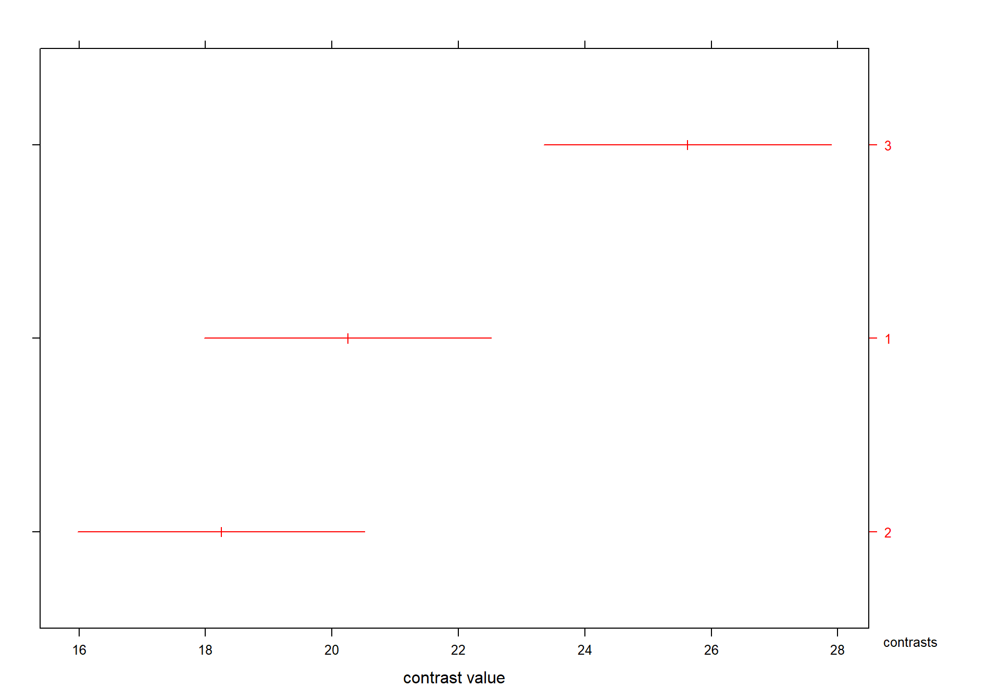
type=none으로 지절하는 경우, 각 집단의 종속변수에 대한 신뢰구간에 대한 그림을 그릴 수 있다.
displayr.aov <- aov(time~Error(emergenc/panel)+panel,data=display)
summary(displayr.aov)##
## Error: emergenc
## Df Sum Sq Mean Sq F value Pr(>F)
## Residuals 3 1052 350.8
##
## Error: emergenc:panel
## Df Sum Sq Mean Sq F value Pr(>F)
## panel 2 232.75 116.38 24.15 0.00135 **
## Residuals 6 28.92 4.82
## ---
## Signif. codes: 0 '***' 0.001 '**' 0.01 '*' 0.05 '.' 0.1 ' ' 1
##
## Error: Within
## Df Sum Sq Mean Sq F value Pr(>F)
## Residuals 12 69.5 5.792위의 anova의 Formula는 우리가 알고있는 형태와 많이 다른 것을 확읺라 수 있다.
Error(emergenc/panel)+panel의 의미는 emergenc 변수는 random 인자로, panel 인자는 fixed 인자로 설정한다는 것이다.
또한, Error가 분수의 꼴로 돼있으므로 panel변수가 emergenc 내에서 nested한다는 의미도 가지고 있다.
data(plasma)plasma 데이터는 위와 같이 구성 돼있다.
데이터를 살펴보기 위해 x축을 time으로하고 y축을 plasma로 한 다음 id의 범주별 그래프를 그린 결과는 아래와 같다.
xyplot(plasma ~ time | id, data=plasma, type="b", pch=19, layout=c(10, 1), between=list(x=.5))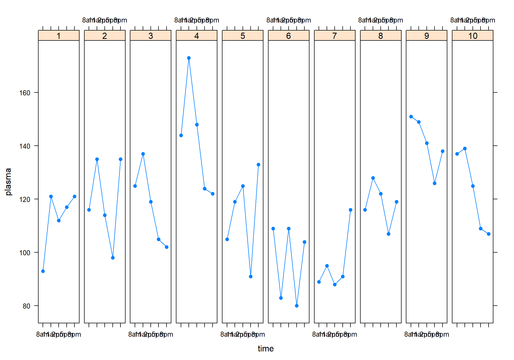
아래의 Formula는 id를 random effect, time은 fixed effect로 지정한 후, 분산분석을 진행한다는 의미이다.
plasma.aov <- aov(plasma ~ Error(id)+time,data=plasma)
summary(plasma.aov)##
## Error: id
## Df Sum Sq Mean Sq F value Pr(>F)
## Residuals 9 10593 1177
##
## Error: Within
## Df Sum Sq Mean Sq F value Pr(>F)
## time 4 2804 701.0 4.754 0.00349 **
## Residuals 36 5308 147.5
## ---
## Signif. codes: 0 '***' 0.001 '**' 0.01 '*' 0.05 '.' 0.1 ' ' 1interaction2wt(plasma ~ time* id, data=plasma)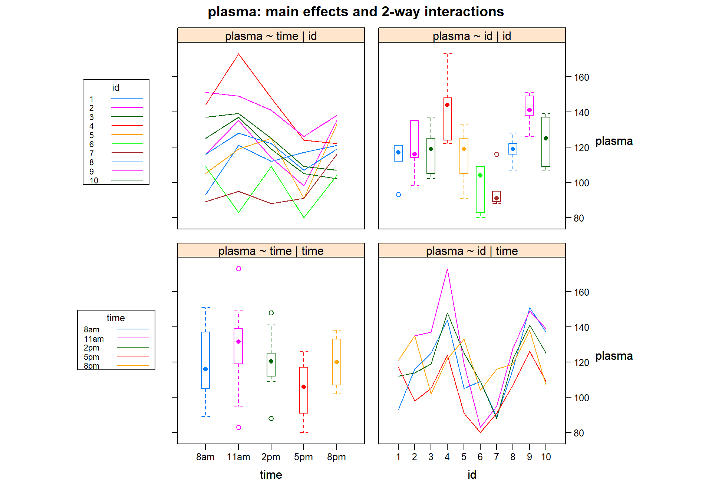
plasma데이터의 교호작용 그림의 결과이다. 교호작용 패널의 그래프를 보면 선간의 교차점이 꽤 많은 것을 알 수 있다.
이를 통해, 두 독립변수 간 교호작용 효과가 존재할수도 있다는 추정을 해볼 수 있다.
plasma$time <-
factor(plasma$time,levels=unique(plasma$time),ordered=FALSE)
plasma.aov2 <- aov(plasma ~ id + time, data=plasma)
plasma.mmc <- mmc(plasma.aov2,focus="time")
plasma.mmc## Tukey contrasts
## Fit: aov(formula = plasma ~ id + time, data = plasma)
## Estimated Quantile = 2.870798
## 95% family-wise confidence level
## $mca
## estimate stderr lower upper height
## 11am-2pm 7.6 5.430613 -7.9901946 23.19019 124.10
## 11am-8pm 8.2 5.430613 -7.3901946 23.79019 123.80
## 11am-8am 9.4 5.430613 -6.1901946 24.99019 123.20
## 2pm-8pm 0.6 5.430613 -14.9901946 16.19019 120.00
## 2pm-8am 1.8 5.430613 -13.7901946 17.39019 119.40
## 8pm-8am 1.2 5.430613 -14.3901946 16.79019 119.10
## 11am-5pm 23.1 5.430613 7.5098054 38.69019 116.35
## 2pm-5pm 15.5 5.430613 -0.0901946 31.09019 112.55
## 8pm-5pm 14.9 5.430613 -0.6901946 30.49019 112.25
## 8am-5pm 13.7 5.430613 -1.8901946 29.29019 111.65
## $none
## estimate stderr lower upper height
## 11am 127.9 3.840023 116.87607 138.9239 127.9
## 2pm 120.3 3.840023 109.27607 131.3239 120.3
## 8pm 119.7 3.840023 108.67607 130.7239 119.7
## 8am 118.5 3.840023 107.47607 129.5239 118.5
## 5pm 104.8 3.840023 93.77607 115.8239 104.8다중비교를 진행한 결과, 11am과 5pm 집단만이 신뢰구간 0을 포함하지 않는다.
따라서, 11am-5pm 집단간 차이만이 유의한 것을 확인할 수 있다.
mmcplot(plasma.mmc,style="both")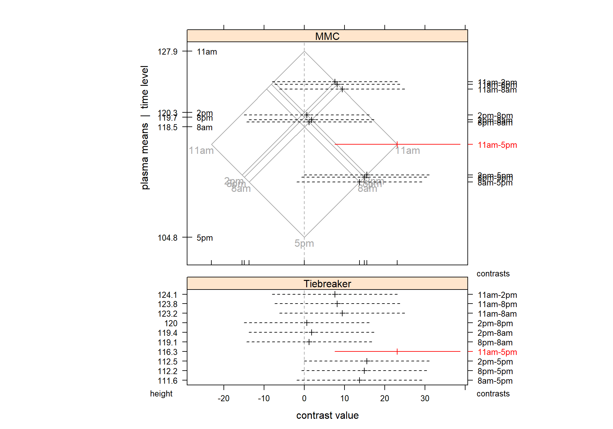
다중비교의 결과를 plot을 통해 나타낸 결과, 11am-5pm 집단 간 차이가 유의하여 붉은색으로 지정된 것을 확인할 수 있다.
data("workstation")station 데이터는 위와 같이 구성 돼있다.
bwplot(devices~station|method,data=workstation)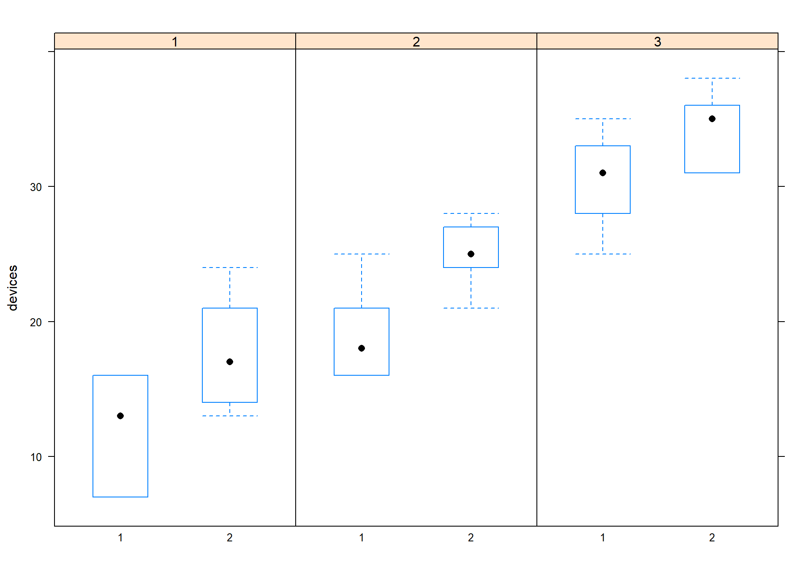
boxplot을 살펴본결과, station에 따라 평균이 달라지는 것을 알 수 있고 metohd의 범주에 따라서도 boxplot의 평균이 달라지는 것을 확인할 수 있다.
아래의 anova formula는 station 변수가 method 변수에 대해서 nested 된 것을 가르키며, 그에 따른 분산분석을 진행하는 것이다.
workstation.aov <- aov(devices~method/station,
data=workstation)
summary(workstation.aov)## Df Sum Sq Mean Sq F value Pr(>F)
## method 2 1545.3 772.6 51.452 2.09e-09 ***
## method:station 3 210.2 70.1 4.666 0.0105 *
## Residuals 24 360.4 15.0
## ---
## Signif. codes: 0 '***' 0.001 '**' 0.01 '*' 0.05 '.' 0.1 ' ' 1분산분석 결과, metohd의 주효과는 유의한 차이가 있는 것을 알 수 있고, station을 method에 대해서 netsted 했을 때의 두 변수간 교호작용은 유의한 것으로 확인되는 것을 확인할 수 있다.
model.tables(workstation.aov,"means",se=TRUE)## Tables of means
## Grand mean
##
## 23.06667
##
## method
## method
## 1 2 3
## 14.8 22.1 32.3
##
## method:station
## station
## method 1 2
## 1 11.8 17.8
## 2 19.2 25.0
## 3 30.4 34.2
##
## Standard errors for differences of means
## method method:station
## 1.733 2.451
## replic. 10 5model.tables를 통해 station과 method에 대한 그룹의 평균과 더불어, 전체 평균에 대한 정보를 알 수 있다.
또한, se=TRUE옵션을 추가하여 standard errors에 대한 정보까지 확인할 수 있다.
data("rhiz.alfalfa")
unique(rhiz.alfalfa$comb)## [1] alfalfa alfalfa+clover
## Levels: alfalfa alfalfa+cloverrhiz.alfala는 clover에서 자라는 박테리아에 대한 정보로 구성된 데이터이다.
rhiz.alfalfa 데이터의 2-way 독립변수는 아래 와 같이 구성 돼있다.
library(gridExtra)
p1 <- bwplot(weight~strain|comb,data=rhiz.alfalfa)
p2 <- bwplot(nitro~strain|comb,data=rhiz.alfalfa)
p3 <- bwplot(Npg~strain|comb,data=rhiz.alfalfa)
print(p1,split=c(1,1,1,3),more=TRUE)
print(p2,split=c(1,2,1,3),more=TRUE)
print(p3,split=c(1,3,1,3),more=FALSE)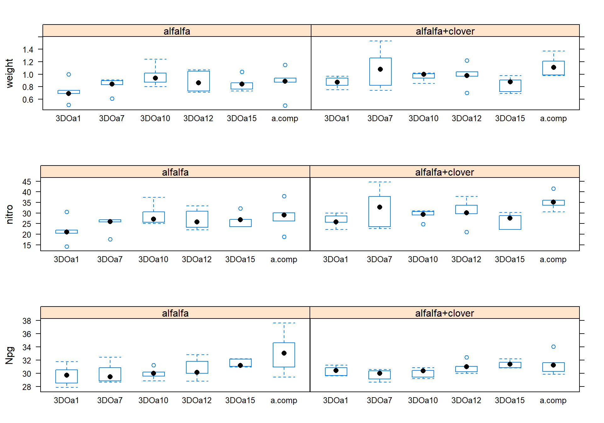
comb변수를 group으로 rhiz.alfalfa의 종속변수들에 대한 boxplot을 그린 결과이다.
data("rhiz.clover")rhiz.clover는 clover에서 자라는 박테리아에 대한 정보로 구성된 데이터이다.
독립변수와 종속변수는 rhiz.alfala데이터와 같다.
단, strain에 대한 독립변수의 level은 다르게 구성됐다.
p4 <- bwplot(weight~strain|comb,data=rhiz.clover)
p5 <- bwplot(nitro~strain|comb,data=rhiz.clover)
p6 <- bwplot(Npg~strain|comb,data=rhiz.clover)
print(p4,split=c(1,1,1,3),more=TRUE)
print(p5,split=c(1,2,1,3),more=TRUE)
print(p6,split=c(1,3,1,3),more=FALSE)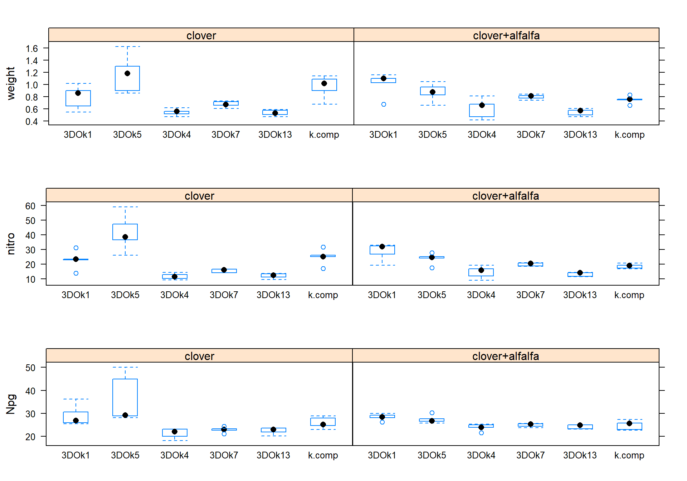
comb변수를 group으로 rhiz.clover의 종속변수들에 대한 boxplot을 그린 결과이다.
## unset position(rhiz.alfalfa$comb) for glht
rhiz.alfalfa.aov <- aov(Npg~strain*comb,data=rhiz.alfalfa)
summary(rhiz.alfalfa.aov)## Df Sum Sq Mean Sq F value Pr(>F)
## strain 5 46.22 9.244 4.565 0.00174 **
## comb 1 0.57 0.573 0.283 0.59714
## strain:comb 5 8.44 1.687 0.833 0.53275
## Residuals 48 97.21 2.025
## ---
## Signif. codes: 0 '***' 0.001 '**' 0.01 '*' 0.05 '.' 0.1 ' ' 1분산분석 결과, strain변수는 적어도 한 집단 간 차이가 유의하다는 결론이 나왔고 comb변수와 교호작용 효과는 유의하지 않은 것을 알 수 있다.
alf.means <- model.tables(rhiz.alfalfa.aov,type="means",se=TRUE,cterms = "strain")
alf.means## Tables of means
## Grand mean
##
## 30.73547
##
## strain
## strain
## 3DOa1 3DOa7 3DOa10 3DOa12 3DOa15 a.comp
## 30.00 29.89 30.00 30.82 31.43 32.27
##
## Standard errors for differences of means
## strain
## 0.6364
## replic. 10model.tables를 통해 집단 간 평균과 standard error에 대한 결과를 얻을 수 있다.
cterms 옵션을 이용하여 strain변수에 대한 정보만을 확인한다.
a.comp 범주가 평균이 가장 높은 것을 확인할 수 있다.
old.fin <- par()$fin
par(fin=c(old.fin[1], 2.5))
plot(y=c(1.01,1,.99,1,1,1), x=alf.means$tables$strain,pch=16,xlim=c(29.5, 32.7),yaxt="n", ylim=c(.85,1.10), ylab="",
xaxt="n", xlab="",col=1:6)
rug(alf.means$tables$strain, ticksize=-.1)
axis(3)
mtext("Npg", 3, line=3)
lines(x=c(29.7,31.5), y=c(.95,.95))
lines(x=c(30.5,32.5), y=c(.90,.90))
strain.labels <- paste(dimnames(alf.means$tables$strain)[[1]],
format(alf.means$tables$strain, digits=6),
sep=": ")
axis(1, at=alf.means$tables$strain[c(2,4, 6)], labels=strain.labels[c(2,4, 6)], line=1, tick=FALSE, adj=.45)
axis(1, at=alf.means$tables$strain[c( 5 )], labels=strain.labels[c( 5 )], line=2, tick=FALSE, adj=.45)
axis(1, at=alf.means$tables$strain[3 ], labels=strain.labels[3 ], line=2, tick=FALSE, adj=.45)
axis(1, at=alf.means$tables$strain[1 ], labels=strain.labels[1 ], line=3, tick=FALSE, adj=.4)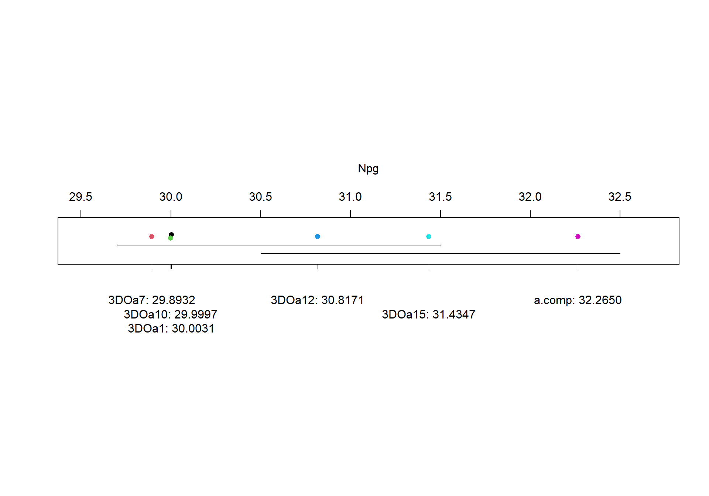
model.tables의 결과를 plot,lines,axis함수를 통하여 시각적으로 나타낼 수도 있다.
par(fin=old.fin)rhiz.alfalfa.mmc <- mmc(rhiz.alfalfa.aov,focus="strain")
rhiz.alfalfa.mmc## Tukey contrasts
## Fit: aov(formula = Npg ~ strain * comb, data = rhiz.alfalfa)
## Estimated Quantile = 2.967764
## 95% family-wise confidence level
## $mca
## estimate stderr lower upper height
## a.comp-3DOa15 0.83028658 0.6364341 -1.0584998 2.719073 31.84986
## a.comp-3DOa12 1.44791050 0.6364341 -0.4408759 3.336697 31.54105
## a.comp-3DOa1 2.26191405 0.6364341 0.3731277 4.150700 31.13405
## a.comp-3DOa10 2.26529871 0.6364341 0.3765123 4.154085 31.13235
## 3DOa15-3DOa12 0.61762392 0.6364341 -1.2711625 2.506410 31.12590
## a.comp-3DOa7 2.37176042 0.6364341 0.4829740 4.260547 31.07912
## 3DOa15-3DOa1 1.43162747 0.6364341 -0.4571589 3.320414 30.71890
## 3DOa15-3DOa10 1.43501213 0.6364341 -0.4537742 3.323799 30.71721
## 3DOa15-3DOa7 1.54147383 0.6364341 -0.3473125 3.430260 30.66398
## 3DOa12-3DOa1 0.81400355 0.6364341 -1.0747828 2.702790 30.41009
## 3DOa12-3DOa10 0.81738821 0.6364341 -1.0713982 2.706175 30.40840
## 3DOa12-3DOa7 0.92384991 0.6364341 -0.9649365 2.812636 30.35517
## 3DOa1-3DOa10 0.00338466 0.6364341 -1.8854017 1.892171 30.00140
## 3DOa1-3DOa7 0.10984636 0.6364341 -1.7789400 1.998633 29.94817
## 3DOa10-3DOa7 0.10646170 0.6364341 -1.7823247 1.995248 29.94647
## $none
## estimate stderr lower upper height
## a.comp 32.26500 0.4500269 30.92943 33.60058 32.26500
## 3DOa15 31.43472 0.4500269 30.09914 32.77029 31.43472
## 3DOa12 30.81709 0.4500269 29.48152 32.15267 30.81709
## 3DOa1 30.00309 0.4500269 28.66751 31.33866 30.00309
## 3DOa10 29.99970 0.4500269 28.66413 31.33528 29.99970
## 3DOa7 29.89324 0.4500269 28.55767 31.22882 29.89324다중비교를 진행한 결과, a.comp-3DOa1, a.comp-3DOa10, a.comp-3DOa7, 집단의 평균차이 신뢰구간이 0을 포함하지 않으므로 집단 간 차이가 유의한 것을 확인할 수 있다.
mmcplot(rhiz.alfalfa.mmc,style="both")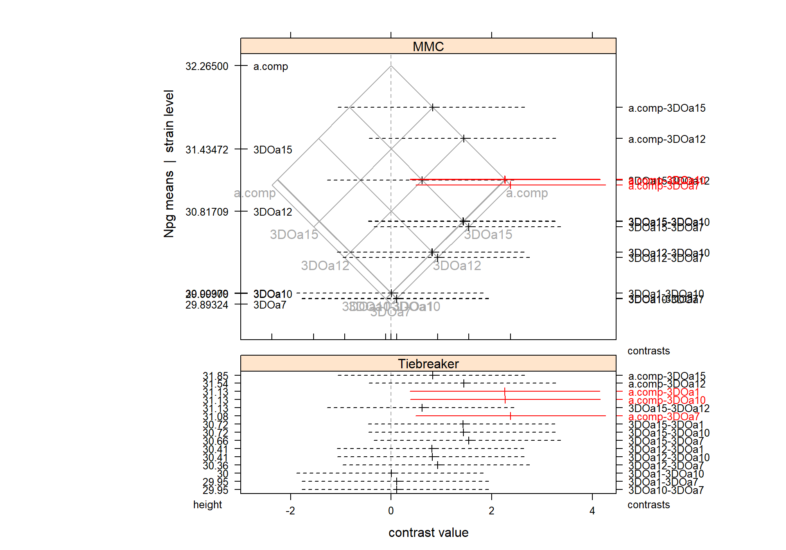
mmcplot을 이용하여 시각적으로 조금 더 쉽게 살펴볼 수 있다.
다중비교 후, 원하는 집단 간 차이를 살펴보기 위해 cbind를 이용하여 contrast matrix를 만들어 준 후, 다시 한 번 다중비교 분석을 진행하였다.
alf.comp <- cbind("1,7,10-c"=c(-3, 0, 0, 1, 1, 1),
"1,10-7" =c( 0, 0, 0, 1, 1,-2),
"1-10" =c( 0, 0, 0, 1,-1, 0),
"15-12" =c( 0, 1,-1, 0, 0, 0),
"1,7,10,c-12,15"=c( 1,-2,-2, 1, 1, 1))
dimnames(alf.comp)[[1]] <- dimnames(rhiz.alfalfa.mmc$none$lmat)[[2]]
alf.mmc <- mmc(rhiz.alfalfa.aov, focus="strain",
focus.lmat=alf.comp)
alf.mmc## Tukey contrasts
## Fit: aov(formula = Npg ~ strain * comb, data = rhiz.alfalfa)
## Estimated Quantile = 2.967008
## 95% family-wise confidence level
## $mca
## estimate stderr lower upper height
## a.comp-3DOa15 0.83028658 0.6364341 -1.0580185 2.718592 31.84986
## a.comp-3DOa12 1.44791050 0.6364341 -0.4403946 3.336216 31.54105
## a.comp-3DOa1 2.26191405 0.6364341 0.3736089 4.150219 31.13405
## a.comp-3DOa10 2.26529871 0.6364341 0.3769936 4.153604 31.13235
## 3DOa15-3DOa12 0.61762392 0.6364341 -1.2706812 2.505929 31.12590
## a.comp-3DOa7 2.37176042 0.6364341 0.4834553 4.260066 31.07912
## 3DOa15-3DOa1 1.43162747 0.6364341 -0.4566777 3.319933 30.71890
## 3DOa15-3DOa10 1.43501213 0.6364341 -0.4532930 3.323317 30.71721
## 3DOa15-3DOa7 1.54147383 0.6364341 -0.3468313 3.429779 30.66398
## 3DOa12-3DOa1 0.81400355 0.6364341 -1.0743016 2.702309 30.41009
## 3DOa12-3DOa10 0.81738821 0.6364341 -1.0709169 2.705693 30.40840
## 3DOa12-3DOa7 0.92384991 0.6364341 -0.9644552 2.812155 30.35517
## 3DOa1-3DOa10 0.00338466 0.6364341 -1.8849205 1.891690 30.00140
## 3DOa1-3DOa7 0.10984636 0.6364341 -1.7784588 1.998151 29.94817
## 3DOa10-3DOa7 0.10646170 0.6364341 -1.7818434 1.994767 29.94647
## $none
## estimate stderr lower upper height
## a.comp 32.26500 0.4500269 30.92977 33.60024 32.26500
## 3DOa15 31.43472 0.4500269 30.09948 32.76995 31.43472
## 3DOa12 30.81709 0.4500269 29.48186 32.15233 30.81709
## 3DOa1 30.00309 0.4500269 28.66786 31.33832 30.00309
## 3DOa10 29.99970 0.4500269 28.66447 31.33494 29.99970
## 3DOa7 29.89324 0.4500269 28.55801 31.22848 29.89324
## $lmat
## estimate stderr lower upper height
## 15-12 0.61762392 0.6364341 -1.2706812 2.505929 31.12590
## c-1,7,10 2.29965773 0.5196463 0.7578630 3.841452 31.11517
## 12,15-1,7,10,c 0.58564475 0.3897347 -0.5707013 1.741991 30.83308
## 1-10 0.00338466 0.6364341 -1.8849205 1.891690 30.00140
## 1,10-7 0.10815403 0.5511681 -1.5271662 1.743474 29.94732alf.both_style <- mmcplot(alf.mmc, h=c(.45, .55), type="lmat", style="both",
sub=list("\n The MMC panel shows informative overprinting. Please see Tiebreaker panel and caption.", cex=.75))
alf.both_style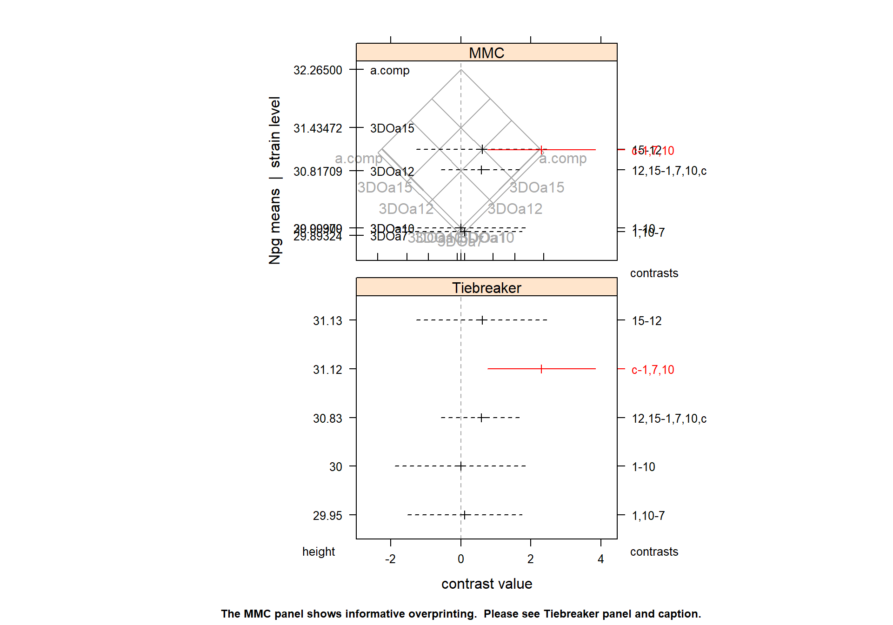
alf.both2_style <- alf.both_style
alf.both2_style$par.settings$layout.heights$panel <- c(.75, .25)
alf.both2_style 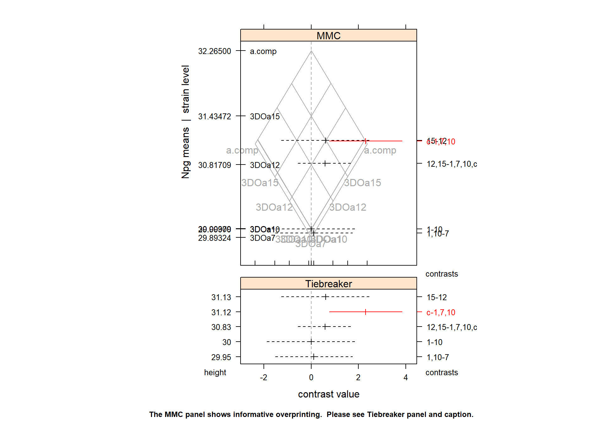
분석결과, c(a.comp) - (3DOa1, 3DOa7, 3DOa10)의 집단 간 차이만 유의한 것을 확인할 수 있다.
rhiz.clover.aov <- aov(Npg~strain*comb,data=rhiz.clover)
summary(rhiz.clover.aov)## Df Sum Sq Mean Sq F value Pr(>F)
## strain 5 642.3 128.45 9.916 1.47e-06 ***
## comb 1 6.9 6.88 0.531 0.46955
## strain:comb 5 228.2 45.65 3.524 0.00857 **
## Residuals 48 621.8 12.95
## ---
## Signif. codes: 0 '***' 0.001 '**' 0.01 '*' 0.05 '.' 0.1 ' ' 1rhiz.clover데이터에 대한 분산분석 결과, strain이 유의한 것을 확인할 수 있고 rhiz.alfala 데이터와 달리 교호작용이 유의한 것을 확인할 수 있다.
model.tables(rhiz.clover.aov,type="means",se=TRUE)## Tables of means
## Grand mean
##
## 26.00674
##
## strain
## strain
## 3DOk1 3DOk5 3DOk4 3DOk7 3DOk13 k.comp
## 28.72 31.86 22.66 23.95 23.39 25.45
##
## comb
## comb
## clover clover+alfalfa
## 26.345 25.668
##
## strain:comb
## comb
## strain clover clover+alfalfa
## 3DOk1 29.04 28.41
## 3DOk5 36.29 27.44
## 3DOk4 21.35 23.98
## 3DOk7 22.93 24.96
## 3DOk13 22.49 24.30
## k.comp 25.97 24.92
##
## Standard errors for differences of means
## strain comb strain:comb
## 1.6096 0.9293 2.2763
## replic. 10 30 5교호작용 효과가 유의하므로 cterms옵션을 사용하지 않고 주효과와 교호작용에 대한 model table을 확인한다.
rhiz.clover.mmc <- mmc(rhiz.clover.aov,focus="strain")
rhiz.clover.mmc## Tukey contrasts
## Fit: aov(formula = Npg ~ strain * comb, data = rhiz.clover)
## Estimated Quantile = 2.968095
## 95% family-wise confidence level
## $mca
## estimate stderr lower upper height
## 3DOk5-3DOk1 3.1387117 1.609592 -1.638710690 7.916134 30.29328
## 3DOk5-k.comp 6.4147051 1.609592 1.637282706 11.192128 28.65528
## 3DOk5-3DOk7 7.9142754 1.609592 3.136852957 12.691698 27.90549
## 3DOk5-3DOk13 8.4695956 1.609592 3.692173167 13.247018 27.62783
## 3DOk5-3DOk4 9.1980737 1.609592 4.420651241 13.975496 27.26360
## 3DOk1-k.comp 3.2759934 1.609592 -1.501429028 8.053416 27.08592
## 3DOk1-3DOk7 4.7755636 1.609592 -0.001858777 9.552986 26.33614
## 3DOk1-3DOk13 5.3308839 1.609592 0.553461434 10.108306 26.05848
## 3DOk1-3DOk4 6.0593619 1.609592 1.281939507 10.836784 25.69424
## k.comp-3DOk7 1.4995703 1.609592 -3.277852173 6.276993 24.69814
## k.comp-3DOk13 2.0548905 1.609592 -2.722531962 6.832313 24.42048
## k.comp-3DOk4 2.7833685 1.609592 -1.994053889 7.560791 24.05624
## 3DOk7-3DOk13 0.5553202 1.609592 -4.222102213 5.332743 23.67070
## 3DOk7-3DOk4 1.2837983 1.609592 -3.493624140 6.061221 23.30646
## 3DOk13-3DOk4 0.7284781 1.609592 -4.048944351 5.505900 23.02880
## $none
## estimate stderr lower upper height
## 3DOk5 31.86263 1.138154 28.48448 35.24078 31.86263
## 3DOk1 28.72392 1.138154 25.34577 32.10207 28.72392
## k.comp 25.44793 1.138154 22.06978 28.82608 25.44793
## 3DOk7 23.94836 1.138154 20.57021 27.32651 23.94836
## 3DOk13 23.39304 1.138154 20.01489 26.77118 23.39304
## 3DOk4 22.66456 1.138154 19.28641 26.04271 22.66456집단 간 차이를 확인하기 위해 다중비교를 진행한 결과, 차이가 유의한 집단은 다음과 같다.
3DOk5-k.comp, 3DOk5-3DOk7, 3DOk5-3DOk13, 3DOk5-3DOk4, 3DOk1-3DOk13, 3DOk1-3DOk4
mmcplot(rhiz.clover.mmc,style="both")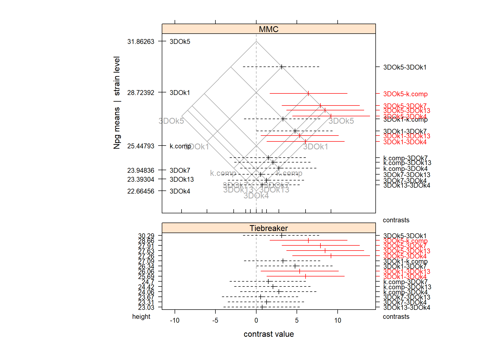
mmcplot을 통해서도 집단 간 유의한 차이가 있는 그룹을 확인할 수 있다.
interaction2wt(Npg~strain*comb,data=rhiz.clover,par.settings=list(
plot.symbol=list(pch=18),
box.dot=list(pch=18),
axis.text=list(cex=.6)
))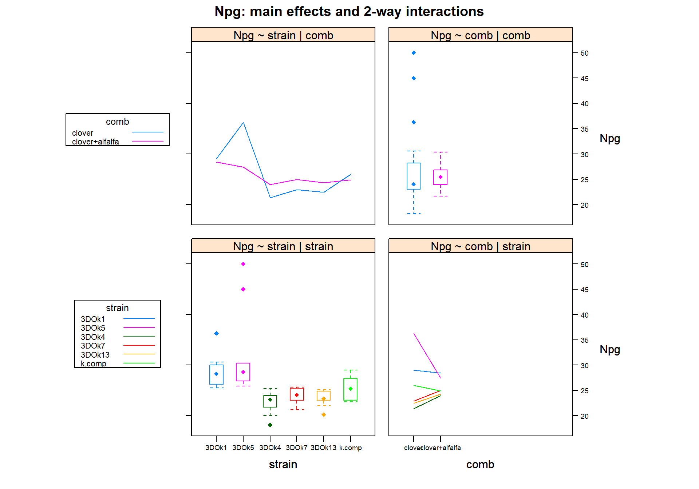
교호작용 plot에서 par.settings옵션을 통해 box와 plot의 symbol을 지정해줄 수 있다.
boxplot을 통해 각 범주 데이터의 이상치를 확인할 수 있다.
또한, 교호작용이 유의하므로 교호작용 패널의 선들이 교차점을 가지고 대체로 평행하지 않은 형태를 보이는 것을 살펴볼 수 있다.
interaction2wt(Npg~strain*comb,data=rhiz.clover,simple=TRUE,par.settings=list(
plot.symbol=list(pch=18),
box.dot=list(pch=18),
axis.text=list(cex=.6)))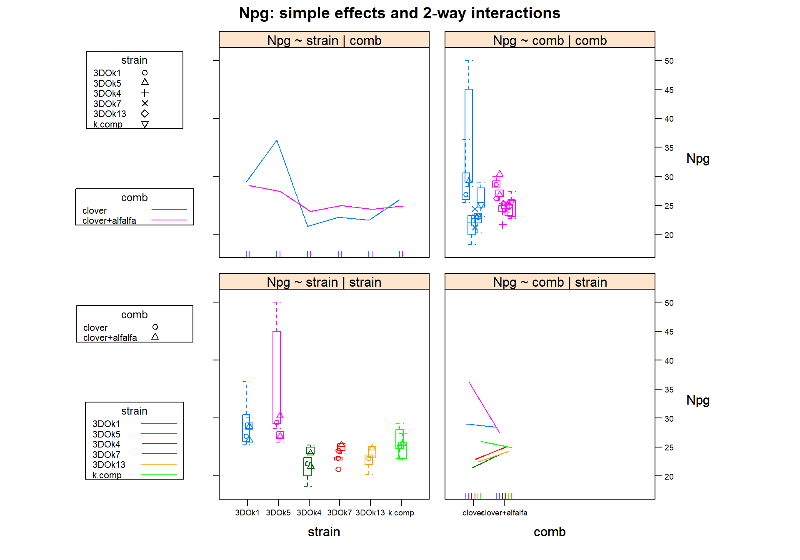
simple=TRUE라는 옵션을 지정하게 되면 범주에 따라서 pch옵션을 자동으로 다르게 해준다. 따라서, 범주간 데이터를 구별하는데 더 유용하다.
아래의 anova formula는 strain변수가 comb변수에 nested 된 formula 이다.
rhiz.clover.nest.aov <-
aov(Npg~comb/strain,data=rhiz.clover)
summary(rhiz.clover.nest.aov)## Df Sum Sq Mean Sq F value Pr(>F)
## comb 1 6.9 6.88 0.531 0.47
## comb:strain 10 870.5 87.05 6.720 2e-06 ***
## Residuals 48 621.8 12.95
## ---
## Signif. codes: 0 '***' 0.001 '**' 0.01 '*' 0.05 '.' 0.1 ' ' 1nested를 진행한 분산분석의 결과, 주효과 comb는 유의하지 않고, 교호작용의 효과만 유의한 것을 살펴볼 수 있다.
old.width <- options(width=35)
names(coef(rhiz.clover.nest.aov))## [1] "(Intercept)"
## [2] "combclover+alfalfa"
## [3] "combclover:strain3DOk5"
## [4] "combclover+alfalfa:strain3DOk5"
## [5] "combclover:strain3DOk4"
## [6] "combclover+alfalfa:strain3DOk4"
## [7] "combclover:strain3DOk7"
## [8] "combclover+alfalfa:strain3DOk7"
## [9] "combclover:strain3DOk13"
## [10] "combclover+alfalfa:strain3DOk13"
## [11] "combclover:straink.comp"
## [12] "combclover+alfalfa:straink.comp"options(old.width)nested된 anova 결과의 계수를 살펴보면 위와 같다.
summary(rhiz.clover.nest.aov,
split=list("comb:strain"=
list(clover=c(1,3,5,7,9),
"clover+alf"=c(2,4,6,8,10))))## Df Sum Sq Mean Sq F value Pr(>F)
## comb 1 6.9 6.88 0.531 0.470
## comb:strain 10 870.5 87.05 6.720 2.00e-06 ***
## comb:strain: clover 5 788.4 157.68 12.172 1.22e-07 ***
## comb:strain: clover+alf 5 82.1 16.42 1.268 0.293
## Residuals 48 621.8 12.95
## ---
## Signif. codes: 0 '***' 0.001 '**' 0.01 '*' 0.05 '.' 0.1 ' ' 1split을 통해 범주를 나눈 후, 그 범주에 따른 교호작용 또한 살펴볼 수 있다.
rhiz.clover의 독립변수 간 교호작용이 유의했으므로 inetr 변수에 두 변수의 교호작용을 넣어 준후 분석을 진행해본다.
rhiz.clover$inter <- with(rhiz.clover, interaction(comb, strain))
levels(rhiz.clover$inter)## [1] "clover.3DOk1" "clover+alfalfa.3DOk1" "clover.3DOk5"
## [4] "clover+alfalfa.3DOk5" "clover.3DOk4" "clover+alfalfa.3DOk4"
## [7] "clover.3DOk7" "clover+alfalfa.3DOk7" "clover.3DOk13"
## [10] "clover+alfalfa.3DOk13" "clover.k.comp" "clover+alfalfa.k.comp"rhiz.clover.inter.aov <- aov(Npg ~ inter, data=rhiz.clover)
summary(rhiz.clover.inter.aov)## Df Sum Sq Mean Sq F value Pr(>F)
## inter 11 877.4 79.76 6.157 3.46e-06 ***
## Residuals 48 621.8 12.95
## ---
## Signif. codes: 0 '***' 0.001 '**' 0.01 '*' 0.05 '.' 0.1 ' ' 1cs12.mmc <- mmc(rhiz.clover.inter.aov, linfct=mcp(inter="Tukey"))
mmcplot(cs12.mmc,
main="clover and clover+alfalfa comparisons",style="both")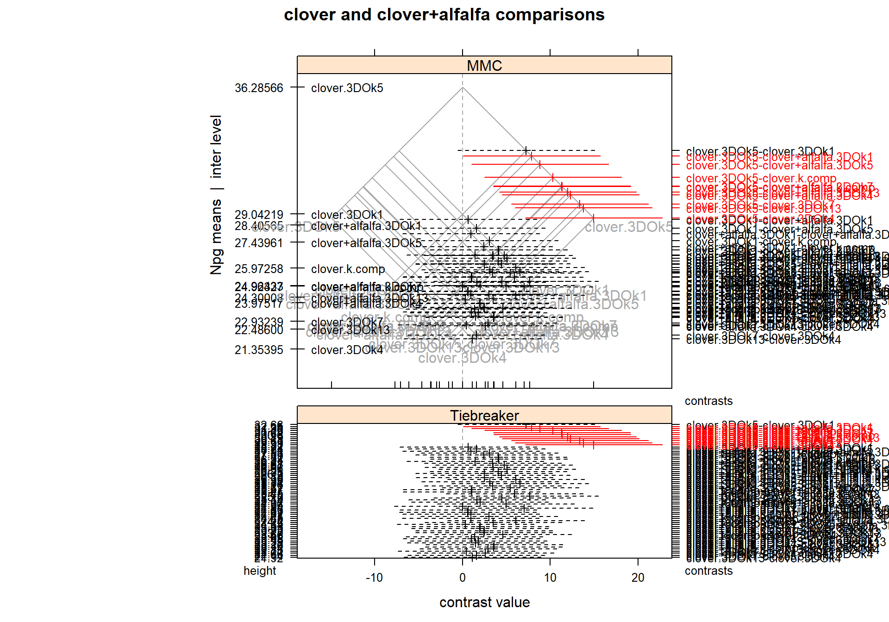
교호작용에 대한 다중 비교 plot을 그리면 위와 같다.
유의한 집단간 차이가 보이지만, 너무 많은 집단간 차이가 출력되어 한 눈에 알아 볼 수 없다.
교호작용 분석을 진행할 때에는 적절한 제약조건이 필요하다는 것을 확인할 수 있다.
## Look at the contrasts, their generated dummy variables
## and their regression coefficients
## Abbreviate their names for presentation,
tmp <- abbreviate(names(coef(rhiz.clover.nest.aov)))
tmp## (Intercept) combclover+alfalfa
## "(In)" "cmb+"
## combclover:strain3DOk5 combclover+alfalfa:strain3DOk5
## "c:3DO5" "c+:3DO5"
## combclover:strain3DOk4 combclover+alfalfa:strain3DOk4
## "c:3DO4" "c+:3DO4"
## combclover:strain3DOk7 combclover+alfalfa:strain3DOk7
## "c:3DO7" "c+:3DO7"
## combclover:strain3DOk13 combclover+alfalfa:strain3DOk13
## "c:3DO1" "c+:3DO1"
## combclover:straink.comp combclover+alfalfa:straink.comp
## "cm:." "c+:."contrasts를 통해 R 프로그램 내에서 더미변수가 어떻게 지정됐는지 확인할 수 있다.
contrasts(rhiz.clover$comb)## clover+alfalfa
## clover 0
## clover+alfalfa 1contrasts(rhiz.clover$strain)## 3DOk5 3DOk4 3DOk7 3DOk13 k.comp
## 3DOk1 0 0 0 0 0
## 3DOk5 1 0 0 0 0
## 3DOk4 0 1 0 0 0
## 3DOk7 0 0 1 0 0
## 3DOk13 0 0 0 1 0
## k.comp 0 0 0 0 1cnx <- aov(Npg~ comb/strain, data=rhiz.clover,x=TRUE)$x
dimnames(cnx)[[2]] <- tmp
## cnx
cnx[seq(1,60,5),c(1,2,3,5,7,9,11)]## (In) cmb+ c:3DO5 c:3DO4 c:3DO7 c:3DO1 cm:.
## 1 1 0 0 0 0 0 0
## 6 1 0 1 0 0 0 0
## 11 1 0 0 1 0 0 0
## 16 1 0 0 0 1 0 0
## 21 1 0 0 0 0 1 0
## 26 1 0 0 0 0 0 1
## 31 1 1 0 0 0 0 0
## 36 1 1 0 0 0 0 0
## 41 1 1 0 0 0 0 0
## 46 1 1 0 0 0 0 0
## 51 1 1 0 0 0 0 0
## 56 1 1 0 0 0 0 0cnx[seq(1,60,5),c(4,6,8,10,12)]## c+:3DO5 c+:3DO4 c+:3DO7 c+:3DO1 c+:.
## 1 0 0 0 0 0
## 6 0 0 0 0 0
## 11 0 0 0 0 0
## 16 0 0 0 0 0
## 21 0 0 0 0 0
## 26 0 0 0 0 0
## 31 0 0 0 0 0
## 36 1 0 0 0 0
## 41 0 1 0 0 0
## 46 0 0 1 0 0
## 51 0 0 0 1 0
## 56 0 0 0 0 1앞서 분산분석의 결과로 얻어진 회귀계수를 더미변수로에 함께 배치되도록 지정해주었다.
cnx를 통해 살펴본 결과, 우리가 지정한 회귀계수가 더미변수 안에 적절하게 들어간 것을 확인할 수 있다.
cnxb <- round(coef(summary.lm(rhiz.clover.aov)),3)
dimnames(cnxb)[[1]]<-tmp
cnxb[c(1,2,3,5,6,7,11,4,6,8,10,12),]## Estimate Std. Error t value Pr(>|t|)
## (In) 29.042 1.610 18.043 0.000
## cmb+ 7.243 2.276 3.182 0.003
## c:3DO5 -7.688 2.276 -3.378 0.001
## c:3DO4 -6.556 2.276 -2.880 0.006
## c+:3DO4 -3.070 2.276 -1.349 0.184
## c:3DO7 -0.637 2.276 -0.280 0.781
## cm:. 2.451 3.219 0.761 0.450
## c+:3DO5 -6.110 2.276 -2.684 0.010
## c+:3DO4 -3.070 2.276 -1.349 0.184
## c+:3DO7 -8.210 3.219 -2.550 0.014
## c+:3DO1 2.668 3.219 0.829 0.411
## c+:. -0.413 3.219 -0.128 0.899clover 데이터의 실험에서 더미변수와 회귀계수를 함께 배치한 뒤 분석한 선형회귀분석 결과는 위와 같이 나온다.
data(feed)
feed.int.aov <- aov(retained~temp*supp,data=feed)
anova(feed.int.aov)## Analysis of Variance Table
##
## Response: retained
## Df Sum Sq Mean Sq F value Pr(>F)
## temp 2 1479.2 739.60 26.0423 1.321e-05 ***
## supp 4 3862.1 965.53 33.9977 2.334e-07 ***
## temp:supp 8 243.5 30.43 1.0716 0.4313
## Residuals 15 426.0 28.40
## ---
## Signif. codes: 0 '***' 0.001 '**' 0.01 '*' 0.05 '.' 0.1 ' ' 1feed 데이터의 분산 분석 결과, temp, supp 독립변수는 유의확률이 유의수준 0.05보다 작으므로 적어도 집단 간 차이가 한 집단 이상에서 유의한 차이가 있다는 것을 알 수 있다.
교호작용의 유의확률은 유의수준 0.05보다 크므로 유의하지 않은 것을 확인할 수 있다.
feed.aov <- aov(retained ~ temp + supp,data=feed)
anova(feed.aov)## Analysis of Variance Table
##
## Response: retained
## Df Sum Sq Mean Sq F value Pr(>F)
## temp 2 1479.2 739.60 25.410 1.499e-06 ***
## supp 4 3862.1 965.53 33.172 3.037e-09 ***
## Residuals 23 669.5 29.11
## ---
## Signif. codes: 0 '***' 0.001 '**' 0.01 '*' 0.05 '.' 0.1 ' ' 1summary(feed.aov,split=
list(temp=list(linear=1,quadratic=2),
supp=list(linear=1,quadratic=2,rest=3:4)))## Df Sum Sq Mean Sq F value Pr(>F)
## temp 2 1479 739.6 25.409 1.50e-06 ***
## temp: linear 1 370 369.8 12.705 0.00165 **
## temp: quadratic 1 1109 1109.4 38.114 2.68e-06 ***
## supp 4 3862 965.5 33.172 3.04e-09 ***
## supp: linear 1 2912 2912.1 100.046 7.61e-10 ***
## supp: quadratic 1 947 946.7 32.525 8.30e-06 ***
## supp: rest 2 3 1.7 0.058 0.94418
## Residuals 23 669 29.1
## ---
## Signif. codes: 0 '***' 0.001 '**' 0.01 '*' 0.05 '.' 0.1 ' ' 1feed 데이터의 contrasts를 고차 방정식을 적용하여 anova 분석을 다시 한 번 진행해보았다.
1차, 2차는 모두 유의하게 나온 것을 알 수 있었지만 rest(나머지) 방정식에서는 더 이상 유의하지 않은 것을 알 수 있다.
model.tables(feed.aov,type="means",se=TRUE)## Tables of means
## Grand mean
##
## 68.8
##
## temp
## temp
## 40 80 120
## 60.2 77.4 68.8
##
## supp
## supp
## 2 4 6 8 10
## 48.33 64.67 76.00 79.00 76.00
##
## Standard errors for differences of means
## temp supp
## 2.413 3.115
## replic. 10 6interaction2wt(retained ~ supp * temp, data=feed)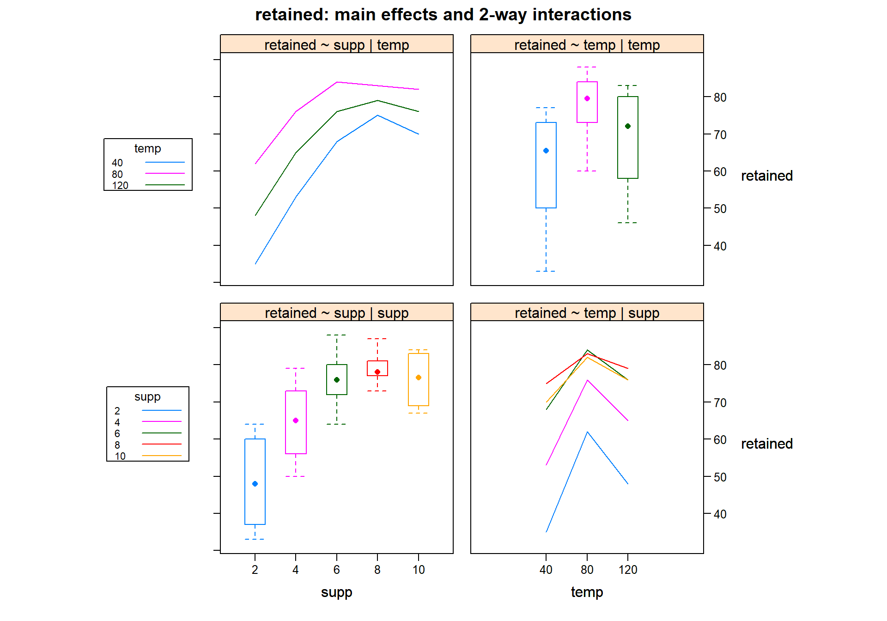
교호작용의 패널은 거의 평행한 모양에 가깝기 때문에 앞서 살펴본 것 처럼, 교호작용이 유의하지 않은 것을 다시 한 번 확인할 수 있다.
R markdown은 다양한 theme를 가지고 있다.
theme는 다음과 같이 설정할 수 있다.
Ouput:
html_document:
theme: theme이름
사용할 수 있는 Theme의 종류는 아래의 링크에서 볼 수 있다.
https://rfriend.tistory.com/311
theme가 아닌 Markdown의 background를 변경을 원할수도 있다.
Markdown의 경우 HTML을 기반으로 하기때문에 이러한 스타일의 변경은 css를 수정해주어야한다.
html에서 내용을 가지고 있는 부분은 body이다.
이러한 body의 배경색을 변경해주면 markdown의 배경색을 변경할 수 있다.
변경방법의 코드는 아래와 같다.
<body style="background-color:grey;">
기본 색깔이 아닌 Color Hex를 지정하여 배경색을 지정해줄 수도 있다.
<body style="background-color:#FFFFE6;">
우리는 Chapter6에서 설명변수의 집단에 따른 평균적인 차이가 존재하는지에 대해 분석하는 One-Way-ANOVA방법에 대해서 살펴보았다. 회귀에서도 단순선형회귀, 다중선형회귀가 있는 것 처럼, 분산분석 또한 설명변수가 2개 이상인 경우에 사용하는 분석방법이 있다.
(집단을 3개 이상 가지는)설명변수가 2개 이상인 경우에는 일원분산 분석이 아닌 이원분산분석(Two-way ANOVA)를 이용하여 집단간 평균의 차이가 존재하는지에 대해서 검정을 진행해야 한다.
이원분산분석을 통해 집단간 평균의 차이를 살펴보고자 할 때, 사용하는 2개 이상의 설명변수들을 주효과라고 하며, 이러한 주효과들이 서로 영향을 받으면서 나타는 효과를 교호작용이라고 한다. 일원분산분석과 달리 이원분산분석은 교호작용을 반드시 분석을 진행할 때 고려해 주어야한다.
이원분산분석 역시 일원분산분석과 같이 정규성, 독립성, 등분산성 3가지의 기본 가정을 가지고 분석을 진행한다.
R에서는 aov함수를 이용하여 분산분석을 진행할 수 있다고 했는데, 이원분산분석 또한 aov함수를 이용하여 진행할 수 있다. (반응변수 ~ 설명변수 * 설명변수,data)의 형태로 Formula를 지정하게 되면 이원분산분석과 더불어 주효과 간 교호작용의 유의성 까지 확인할 수 있다.
aov에 사용되는 formula를 interactionw2t함수에 지정하게 되면 각 주효과에 따른 반응변수의 boxplot과 교호작용 plot까지 확인할 수 있기 때문에 데이터 탐색에 꽤나 유용하게 사용할 수 있다.